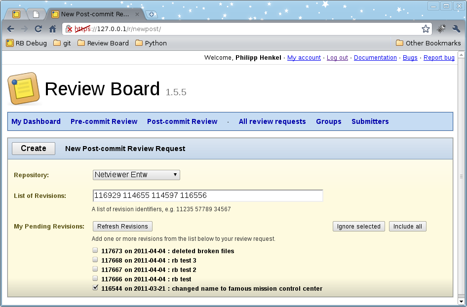

Review Board is a powerful web-based code review tool with focus on pre-commit reviews. This project seamlessly integrates post-commit functionality for Subversion.

Post-commit for Review Board
- Web-based creation of post-commit review requests
- Smooth integration with Subversion repositories
- Select from revisions that are not yet added to Review Board
- Create request based on one or more revisions
- 100% compatible to Review Board 1.5, no database changes required
Installation
- Install latest Review Board 1.5
- Download post-reviewboard and replace content of reviewboard folder
- Login as Admin and add a new SCM Tool "Subversion Post" with class name "reviewboard.scmtools.svn_post_tracker.SVNPostCommitTrackerTool"
- Edit your SVN repository and select repository type "Subversion Post"
- Done!
Next Steps
- Allow exclusion of files from a request, e.g. XML UI descriptions
- Support more SCM tools, e.g. Perforce, Microsoft TFS
- Contribute the post commit feature to the official project
Want to Contribute?
Some years ago I added Perforce post-commit support. Later I implemented Microsoft TFS support for Review Board. However, I did not publish my changes at that time and now I don't use these SCM systems any longer. I think it is not much work to make my old SCM implementations run with post-reviewboard. I'm looking for contributors which would like to adapt the code and test it in real-life scenarios.
Contact
Philipp Henkel, philipp.henkel at citrixonline.com
The views expressed here are mine alone and have not been authorized by, and do not necessarily reflect the views of, Citrix.
License
Both Review Board and this project are under the MIT license, which basically means you are free to do as you want. You must however keep the software under the MIT license.
Review Board is absolutely free for commercial use.
Download
You can download this project in either
zip or
tar formats.
You can also clone the project with Git
by running:
$ git clone git://github.com/philipphenkel/post-reviewboard